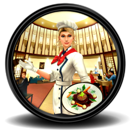

Kawa
Owoce

Słodycze
Nasi cukiernicy uczyli się od mistrzów cukiernictwa z Francji
Cukiernia powstała w 1972 roku w Lublinie. Jest rodzinną firmą specjalizującą się w produkcji różnego rodzaju wyrobów ciastkarskich, deserów, potrawy śniadaniowych. Nasza cukiernia cieszy się dużym uznanie, klientów, którzy bardzo chwalą wysokie walory smakowe, różnorodność dodatków i dekoracji. Firma stosuje naturalne składniki bez konserwantów.
Cukiernia działa na terenie Lublina. Cukiernia stosuje tradycyjne metody,sprawdzone receptury oraz proces produkcji pozbawiony konserwantów i środków chemicznych. Podstawowym asortymentem są różnego rodzaju wyroby ciastkarskie i desery, napoje gorące, potrawy śniadaniowe oraz towary handlowe.